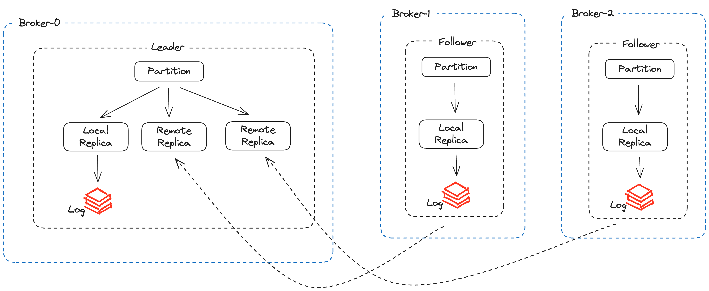

关于Kafka的文章，主要是为了学习在分布式系统下，非常重要的部分如数据复制，数据分区的真正实践，同时对于消息队列的使用并不是很多，从而通过学习Kafka相关内容来进行深入，当然没有大型项目关于Kafka的深入实践，很难结合业务场景来调优最佳实践和更加深刻的认知，但还是希望通过这种方式来进行入门，了解万变不离其宗的分布式系统下的复杂性。
Kafka本身算是一个复杂项目，从而不想一下子掉进开源代码中，本次学习还是按照想要了解数据复制，数据分区，负载均衡这种主题来进行学习，故而有些点比如log本地写入磁盘，网络模型等内容暂时不是我的重点。
本节是关于Kafka比较重要的组成部分进行简单的介绍，方便接下来更深入的了解。
-
消息
消息是Kafka中最基本的数据单元。消息可以看成是数据库里的一个“数据行”或一条“记录”，由字节数组组成。
-
Topic
topic是用于存储消息的逻辑概念，可以看作一个消息集合。每个生产者可以有多个生产者向其中推送消息，然后由任意多个消费者进行消费

每个Topic可以划分成若干个分区(Partition)，一个分区就是一个提交日志。消息以追加的方式写入分区，然后以先入先出的顺序读取。由于一个主题一般包含几个分区，因此无法在整个主题范围内保证消息的顺序，但可以保证消息在单个分区的顺序。

-
broker和集群
一个独立的Kafka服务器被称为broker。broker接受来自生产者的消息，为消息设置偏移量，并提交消息到磁盘保存。broker为消费者提供服务，对读取分区的请求作出响应，返回已经提交到磁盘上的消息。
broker是集群的组成部分，每个集群都有一个broker同时充当了集群控制器的角色（自动从集群的活跃成员中选举出来）。控制器负责管理工作，包括将分区分配给broker和监控broker。在集群中，一个分区从属于一个broker，该broker被称为分区的首领。一个分区可以分配给多个broker，这个时候会发生分区复制，这种复制机制为分区提供了消息冗余，如果有一个broker失效，其他broker可以接管领导权。然后相关的消费者和生产者都要重新连接到新的首领。

-
ISR集合
ISR(In-Sync Replica)集合表示的是目前“可用”(alive)且消息量与Leader相差不多的副本集合，这是整个副本集合的一个子集。其进入条件为：
1. 副本所在节点必须是连接畅通的
2. 副本最后一条消息的offset与Leader副本的最后一条消息的offset相等或者上一次的catchUp的时间与当
前时间的差值小于一个设定的阈值
leaderEndOffset == logEndOffset || currentTimeMs - lastCaughtUpTimeMs <= replicaMaxLagMs
每个分区中的Leader副本都会维护此分区的ISR集合。写请求首先由Leader副本处理，之后Follower副本会从Leader上拉取写入的消息。ISR集合是Kafka数据可靠性的一部分保证，类似于ZK中的“少数服从多数”，当Leader副本不可用时，ISR集合中的其他副本由于和Leader的offset保持一致，从而可以充当新Leader副本供读和写。
-
HW & LEO
LEO（Log End Offset）是所有的副本都会有的一个offset，它指的是当前副本的同步到的最后一个消息的offset。当Follower副本成功从Leader副本拉取消息并更新到本地的时候，Follower副本的LEO就会增加。
HW(HighWatermark)和LEO与上面的ISR集合紧密相关。HW标记了一个特殊的offset，指的是所有ISR集合中最小的LEO位置，当消费者处理消息的时候，只能拉取到HW之前的消息，HW之后的消息对消费者来说是不可见的，HW也是由Leader副本管理。当ISR集合中全部的Follower副本都拉取HW指定消息进行同步后，Leader副本会递增HW的值。通过多副本以及HW的同步，保证了可靠性消费。

Kafka权衡了同步复制和异步复制，通过加入ISR集合，通过动态的管理副本集合，避免所有副本同步复制带来的延迟过高问题，利用HW来保证当Leader副本所在的Broker出现问题时，此时消费Follower副本消息的一致性。
在简单概念介绍完，以及分析过kafka-producer、kafka-replica-server、kafka-fetch后，做一下从数据同步侧是如何保证可靠性问题：
1.多副本机制
通过一个分区多副本机制，一个Leader副本，其余都为Folloer副本，每个副本都存在于不同的Broker上，当Leader出现问题，就进行故障转移，在剩下的副本中选举新Leader来保证数据的可用性

2. ISR集合
通过定义ISR集合，实现分布式系统下的数据不丢失，就像Zookeeper的“大于一半”的方式，kafka通过定义ISR集合，在producer生产消息过后，需要ISR集合中的所有副本都同步此次数据后，才确认这次生产的消息是成功的，那么当Leader节点出故障后，就可以从ISR集合中选出新Leader，来保证已经生成的消息不会丢失，同时通过动态的ISR集合的伸缩，当追赶上Leader的LEO，就将其加入到ISR中，如果一个副本的lastCaughtUpTime < replica.lag.time.max.ms并且Follower LEO < Leader LEO，那么也会被认为是失效副本，从而踢出ISR中，等待重新追赶上Leader。
3. LEO与HW
对于Partiton的每个副本而言，其Log都有一个Log End Offset，简称LEO，而HW指的是Partition的所有副本中最小的LEO，通过Replica Fetch Request同步Leader数据后，就会及时的更新Leader的HW，通过这种方式，就很好的保证了数据可见的一致性，因为不是每个Broker的状态都是一样的，有的副本同步的比较慢，从而每个副本的LEO可能是不一样的，那么只有HW之前的消息对consumer是可见的，这样的话，当Leader失效，重新选举Leader后，就还可以保证只有HW之前的消息是可见的，保证了数据的一致性，因为有可能最后只剩一个副本当选新的Leader，假设这个副本的LEO小于之前的Leader的LEO，如果不以HW作为可见，那么就会出现消息丢失的问题。